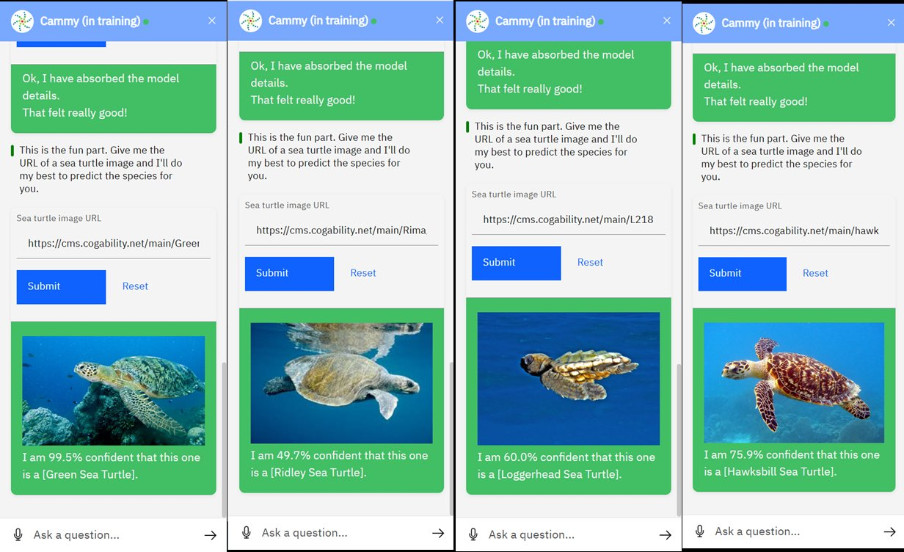

This project aimed to aid efforts in sea turtle conservation by leveraging artificial intelligence to enhance public knowledge, improve measurement techniques, and enable species identification of sea turtles. Through the training of an AI bot named Cammy, the project demonstrated the power of supervised and unsupervised learning to perform three distinct conservation tasks.

Public Education
Trained using supervised learning to answer commonly asked questions about sea turtles for effective communication and education.
Weight Prediction
A regression model predicts sea turtle weights based on species, carapace length, and carapace width, reducing invasive measurement needs.
Species Identification
Classification and unsupervised learning enable Cammy to accurately identify sea turtle species from photographs for research data grouping.
Abstract
The Sea Turtle Conservation AI Project aimed to aid efforts in sea turtle conservation by leveraging artificial intelligence to enhance public knowledge, improve measurement techniques, and enable species identification of sea turtles. Through the training of an AI bot named Cammy, the project demonstrated the power of supervised and unsupervised learning to perform three distinct tasks. First, Cammy was trained using supervised learning to answer commonly asked questions about sea turtles, enabling more effective communication and education. Second, a regression model was applied to predict sea turtle weights based on species, carapace length, and carapace width, reducing the need for invasive measurement techniques. Finally, classification and unsupervised learning were used to train Cammy to accurately identify sea turtle species from photographs to make it easier for researchers to analyze and group data. While Cammy performed well overall, the bot still made a few errors suggesting there is room for improvement and further training. Despite the errors, the project undoubtedly proved the potential of AI in advancing wildlife conservation.